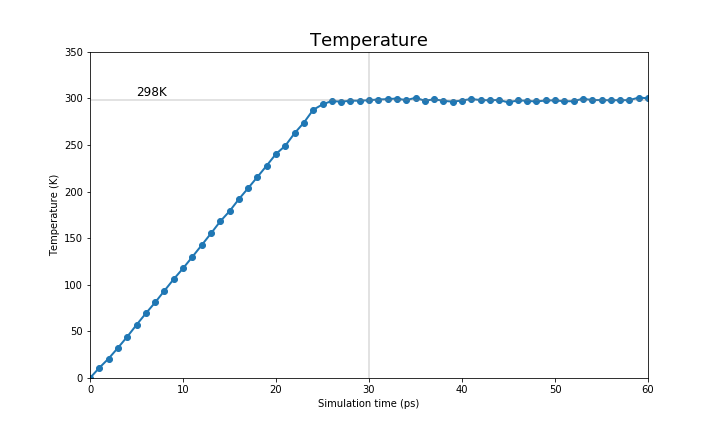
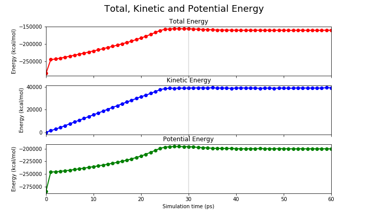
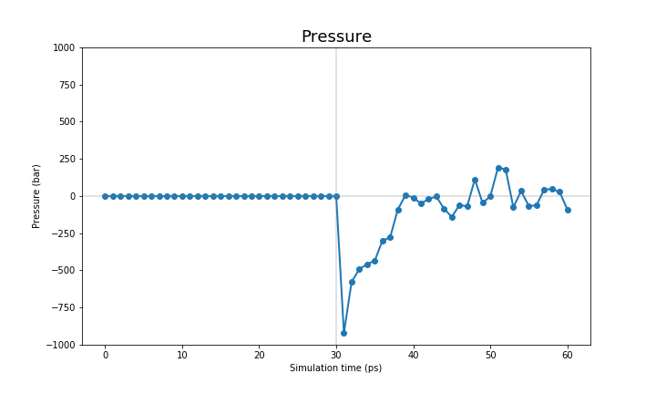
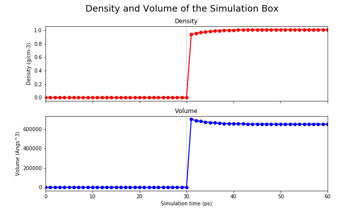

Thermalisation and Density equilibration
Overview
Teaching: 20 min
Exercises: 0 minQuestions
How do I equilibrate my system with
sander?Objectives
Explain why thermalisation and density equilibration are important.
Use
sanderto perform thermalisation (NVT) and density equilibration (NPT).
After the minimisation step, we will heat the system up to the target temperature 298K (25°C, standard value for room temperature experiments) while keeping the volume constant. Afterwards, we will allow the volume to fluctuate and equilibrate the density of the system at a contant pressure of 1 atm (standard value) while still keeping the temperature at 298K.
Thermalisation
We will use the input file sander_heat.in to gradually increase the temperature of the system up to our target value over the first 30 ps. To help our system accomodate to this change, we will use a temperature ramp in which we control the temperaure increase per timestep.
Heating ramp from 0K to 300K
&cntrl
imin=0, ! Run molecular dynamics.
ntx=1, ! Initial file contains coordinates, but no velocities.
irest=0, ! Do not restart the simulation, (only read coordinates from the coordinates file)
nstlim=15000, ! Number of MD-steps to be performed.
dt=0.002, ! Time step (ps)
ntf=2, ntc=2, ! Constrain lengths of bonds having hydrogen atoms (SHAKE)
tempi=0.0, temp0=298.0, ! Initial and final temperature
ntpr=500, ntwx=500, ! Output options
cut=8.0, ! non-bond cut off
ntb=1, ! Periodic conditiond at constant volume
ntp=0, ! No pressure scaling
ntt=3, gamma_ln=2.0, ! Temperature scaling using Langevin dynamics with the collision frequency in gamma_ln (ps−1)
ig=-1, ! seed for the pseudo-random number generator will be based on the current date and time.
nmropt=1, ! NMR options to give the temperature ramp.
/
&wt type='TEMP0', istep1=0, istep2=12000, value1=0.0, value2=298.0 /
&wt type='TEMP0', istep1=12001, istep2=15000, value1=298.0, value2=298.0 /
&wt type='END' /
sander produces several output files:
heat_classical.out: Log file with system values stored during the run.system.heat.rst7: coordinates and velocities to restart the simulation.system.heat.nc: trajectory in netcdf format of the simulation.
If we open the heat_classical.out file, we will find that the last step of MD has similar values as these (they won’t be the same as we have generated velocities with a random number seed):
NSTEP = 15000 TIME(PS) = 30.000 TEMP(K) = 298.10 PRESS = 0.0
Etot = -156706.7596 EKtot = 39190.4089 EPtot = -195897.1685
BOND = 919.5864 ANGLE = 2384.5882 DIHED = 3850.0906
1-4 NB = 1089.6233 1-4 EEL = 12032.6825 VDWAALS = 24316.3039
EELEC = -240490.0435 EHBOND = 0.0000 RESTRAINT = 0.0000
Ewald error estimate: 0.3447E-04
Pressure equilibration
Once the thermalisation step has finished, sander will use the input file sander_equil.in to equilibrate the density of the system. It is advised to heat and equilibrate over longer periods of simulations than the ones used in this workshop. However for the sake of time, we will use the same simulation length (30ps):
Density equilibration
&cntrl
imin= 0, ! Run molecular dynamics.
nstlim=15000, ! Number of MD-steps to be performed.
dt=0.002, ! Time step (ps)
irest=1, ! Restart the simulation and read coordinates and velocities from the restart file provided in -c
ntx=5, ! Initial file contains coordinates and velocities.
ntpr=500, ntwx=500, ntwr=500, ! Output options
cut=8.0, ! non-bond cut off
temp0=298, ! Temperature
ntt=3, gamma_ln=3.0, ! Temperature scaling using Langevin dynamics with the collision frequency in gamma_ln (ps−1)
ntb=2, ! Periodic conditiond at constant pressure
ntc=2, ntf=2, ! Constrain lengths of bonds having hydrogen atoms (SHAKE)
ntp=1, taup=2.0, ! Pressure scaling
iwrap=1, ioutfm=1, ! Output trajectory options
/
Again, sander produces several output files:
equil_classical.out: Log file with thermodynamic data of the system stored during the run.system.equil.rst7: coordinates and velocities to restart the simulation.system.equil.nc: trajectory in netcdf format of the simulation.
The last step of MD in the equil_classical.out should be similar to this:
NSTEP = 15000 TIME(PS) = 60.000 TEMP(K) = 300.17 PRESS = -89.5
Etot = -160777.6918 EKtot = 39462.5280 EPtot = -200240.2199
BOND = 868.6881 ANGLE = 2429.6473 DIHED = 3839.3079
1-4 NB = 1101.9515 1-4 EEL = 12099.2533 VDWAALS = 25814.3482
EELEC = -246393.4160 EHBOND = 0.0000 RESTRAINT = 0.0000
EKCMT = 18077.2732 VIRIAL = 19336.2993 VOLUME = 651748.7327
Density = 1.0087
Analysis of the MM equilibration simulation
We will now have a closer look at the final steps highlighted before. In the log files, we have monitored the values of several quantities. Especially relevant are:
NSTEP: The time step that the MD simulation is atTIME: The total time of the simulation (including restarts)TEMP: System temperaturePRESS: System pressureEtot: Total energy of the systemEKtot: Total kinetic energy of the systemEPtot: Total potential energy of the system
AmberTools provides process_mdout.perl, a perl script to gather and print this information in a easy-to-use format. You can easily call it from the command-line like this:
$AMBERHOME/bin/process_mdout.perl heat_classical.out equil_classical.out
Processing sander output file (heat_classical.out)...
Processing sander output file (equil_classical.out)...
Starting output...
Outputing summary.TEMP
Outputing summary.TSOLUTE
Outputing summary.TSOLVENT
Outputing summary.PRES
Outputing summary.EKCMT
Outputing summary.ETOT
Outputing summary.EKTOT
Outputing summary.EPTOT
Outputing summary.DENSITY
Outputing summary.VOLUME
Here we will show you the expected output of an equilibration run. First, we will show the temperature and the energies (kinetic, potential and total) of the system.
| Temperature | Energy |
|---|---|
| K | kcal/mol |
|  |  |
The pressure and the density are only set when we perform the NPT run, therefore they only show reasonable values on the last 30 ps.
| Pressure | Density |
|---|---|
| bar | g*cm-3 |
|  |  |
You can see that the system starts to reach a plateau on each one of these values. We want to reiterate that the MM equilibration in this tutorial is way too short (only 60ps) and we suggest you to run a longer equilibration steps in your simulations.
It is not within the scope of this tutorial to fully analyse these equilibration runs, therefore we leave that to you. However, we provide a jupyter notebook with the code to produce these graphs for your systems.
Key Points
Thermalisation takes our system up to the target temperature.
Using a temperature ramp is a good way to slowly increase the system temperature and avoid your system from blowing up due to some bad contacts in your coordinates. You can set up a temperature ramp using the NMR restraint options of
sander.Density equilibration fixes the water density and corrects the size simulation box. It prevents air bubbles in our system that might cause simulation artefacts.